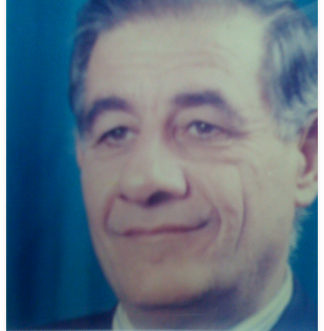

<section id="founder">
  <div class="content-section">
    <h2 class="section-title">{{ "Founder" }}</h2>
    <div class="founder-image mb-3">
      
    </div>
    <div class="founder-intro">
      <p class="founder-word">
        Born in 1968, he studied chemical engineering in Vienna and holds
        Austrian citizenship in addition to Palestinian citizenship. He is
        fluent in English and German in addition to Arabic. He is considered one
        of the prominent figures in society through his close relations with
        many international and local institutions and civil society
        institutions. He is considered an active participant in Many local and
        international political, commercial and economic conferences and
        workshops. In addition to his active membership in the following
        institutions: .Member of the Palestinian Businessmen Association. Member
        of the Palestinian Chamber of Commerce
      </p>
    </div>
    <div class="founder-lines">
      <ul >
        <li>
          {{
            "Chairman of the Administrative Board of the Palestinian Arab Medical Association, which represented the Physicians and Pharmacists Syndicate, and a member of the Administrative Board for several sessions"
              | translate
          }}
        </li>
        <li>
          {{"Member of the Palestinian National Council" | translate }}
        </li>
        <li>
          {{"Vice President of the Palestinian Health Council of the Palestinian Red Crescent" | translate }}

        </li>
        <li>
          {{"Board member and founder of the Patient Friends Charitable Society" | translate }}

        </li>
        <li>
          {{"Founding member and Chairman of the Board of Directors of the Middle East Laboratories for the Pharmaceutical and Cosmetics Manufacturing Company LLC" | translate }}

        </li>
        <li>
          {{"Member of the first elected board of directors of the Palestinian Chamber of Commerce, and the winner of the highest votes in those elections" | translate }}

        </li>
        <li>
          {{"Member of the Board of Directors of Bank of Palestine Ltd" | translate }}

        </li>
        <li>
          {{"Chairman and founder of the Gaza Central Warehouse Company for Pharmaceuticals and Medical Supplies" | translate }}

        </li>
      </ul>
</div>
  </div>
</section>
